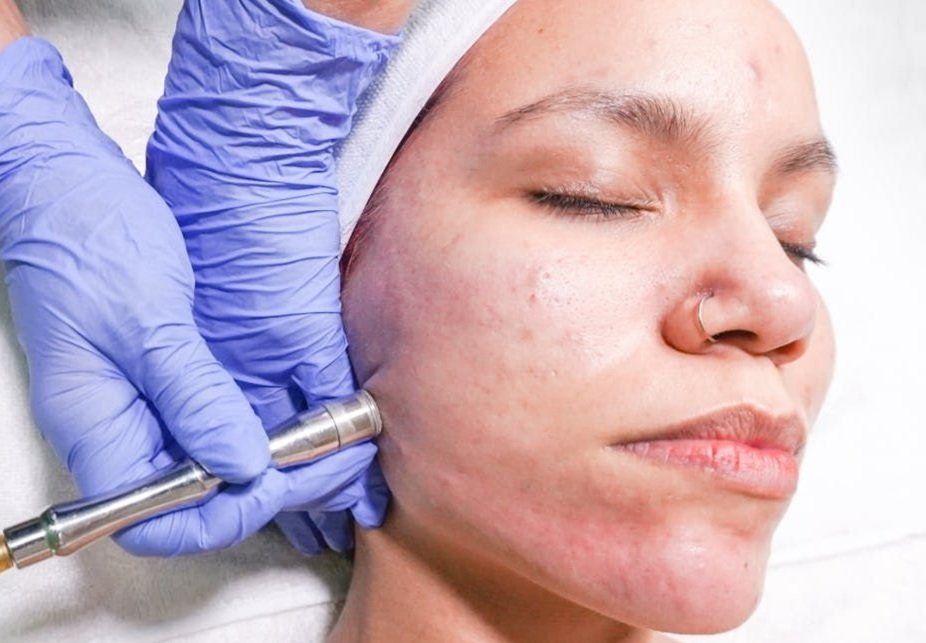

Microdermabrasion is a Must

I’ve been an esthetician for almost a decade and an esthetician-owner for the last 8 years. If there is one tiny piece of wisdom I could impart on new esthetician business owners it would be to get a microdermabrasion machine. At the start of my practice, I was very anti-machinery and equipment. Call it being cocky or just a lack of understanding but I felt being able to achieve results with just my bare hands was the biggest flex. Maybe it is. But providing my clients with the types of results they’ve come to expect from me with just my bare hands is very hard on the body. And I knew I wouldn’t be able to keep up at my pace (seeing ~95-120 clients per month).
Things changed a few years ago when I got a Hydrafacial device. I have the highest tier device available on the market which enables me to provide hundreds of specialized services without sacrificing the joint and muscle health of my hands. It’s a game changer for esthetic practitioners, sure, but it’s also pricey. Despite what the company sales team says, you won’t be selling or making much on $199 Hydrafacials. The cost to provide is nearly half that depending on the type of treatment you need to do. This is why my Hydrafacial treatments start at $375 ($250 for memebers). I have to make sure the treatments cover the costs. So it would be foolish of me to recommend you to run out and get a Hydrafacial machine off the bat.
But definitely get a microdermabrasion machine. ASAP. Your body and your clients will thank you.
Can you believe I did not use microdermabrasion at all until this year? Crazy. But this one treatment has been the best affordable game changer for my clients! After working with the Zemits Joli Peel Pro (there’s a discount for those who use the link, FYI) for the past 2 months, this is my honest review.
Benefits of Diamond Tip Microdermabrasion
Before we get into my personal experiences, we should discuss the benefits of microdermabrasion in general. Some of you reading this are seasoned estheticians so you already know what’s up. But there may be some potential clients reading so we’re going to start with the basics.
First, the device creates controlled exfoliation through a handpiece fitted with an industrial-grade diamond tip. These diamond tips, available in various grits (typically 60-120), precisely abrade the stratum corneum—the topmost layer of skin consisting primarily of dead cells. The diamond tip provides consistent, controllable abrasion without introducing particles that could cause micro-tears or irritation.
Second, the device employs adjustable suction technology that immediately vacuums away the exfoliated skin cells through the same handpiece. This vacuum action provides additional benefits by stimulating microcirculation in the treated areas and promoting lymphatic drainage, enhancing the overall cellular response.
The entire process triggers the skin's natural healing response, which accelerates cell turnover and stimulates fibroblasts to produce new collagen and elastin. This cellular activity continues for days after the treatment, providing both immediate results and progressive improvement in skin quality with each session in a treatment series.
Microdermabrasion is Efficient and Effective
Microdermabrasion is a treatment that delivers tangible, consistent improvements. It works best in a package but can always be done as a one-off to attain glowing results as well. You can deliver a full microdermabrasion treatment in as little time as 30 minutes if you move fast enough—making the full facial time 45 minutes to 1 hour. In particular, this treatment excels in addressing several common skin concerns that clients seek our expertise to resolve:
Textural Refinement: The physical exfoliation provided by the diamond tips effectively smooths micro-roughness and keratinized areas that chemical exfoliants might not fully address. This mechanical action is particularly effective for clients with thickened stratum corneum due to environmental damage or impaired desquamation.
Enhanced Cellular Communication: Beyond the visible exfoliation, diamond tip microdermabrasion initiates a cascade of intercellular signaling that continues long after the treatment concludes. This communication between keratinocytes and fibroblasts stimulates collagen production while regulating melanocyte activity, addressing both textural and pigmentation concerns simultaneously.
Minimized Comedonal Acne: For acne-prone clients, regular diamond tip microdermabrasion helps prevent the follicular impaction that leads to comedones. The controlled removal of excess corneocytes combined with the vacuum extraction component keeps pores clear while the anti-inflammatory effects help calm existing lesions.
Accelerated Results from Topical Actives: One of the most significant advantages of diamond tip microdermabrasion is how it enhances the performance of your professional backbar products and the client's home care regimen. By removing the barrier of accumulated dead cells, you effectively increase the bioavailability of active ingredients like peptides, growth factors, and antioxidants.
Progressive Improvement in Skin Quality: With regular treatments, clients experience cumulative benefits beyond surface changes. The deeper stimulation of fibroblast activity leads to improved dermal matrix organization, enhancing skin's resilience and radiance from within.
The “Ideal” Client
One of the reasons I’d recommend every esthetician to have a microdermabrasion machine is because it truly is a versatile device that works with almost any client that will be walking through your doors. In my practice, I've found these client profiles respond exceptionally well:
The Professional Polisher: These clients already maintain relatively healthy skin but seek the extra refinement and glow that diamond tip microdermabrasion provides. They value the immediate results for special events and appreciate the progressive improvement in skin quality with regular maintenance.
The Acne Management Client: For clients struggling with non-inflammatory acne and persistent congestion, diamond tip microdermabrasion offers complementary benefits to their chemical exfoliation regimen. The mechanical clearing of follicular openings prevents comedone formation while improving the penetration of prescribed acne treatments. These would be your clients that are already clear. I wouldn’t advise using microdermabrasion over active acne lesions or heavily inflamed skin as it can cause more damage.
The Early-Stage Aging Client: Clients in their 30s and 40s noticing the first signs of elasticity loss and fine lines respond particularly well to the collagen-stimulating effects of diamond tip microdermabrasion. For these clients, the treatment serves as both corrective and preventative care.
The Post-Inflammatory Hyperpigmentation Case: When addressing PIH, diamond tip microdermabrasion accelerates the fading process by removing pigmented keratinocytes while stimulating fresh cell production. This mechanical approach complements tyrosinase inhibitors and brightening agents in the client's regimen.
The Skincare Enthusiast: Many clients actively engaged in their skincare journey appreciate how diamond tip microdermabrasion enhances the performance of their existing products. For these educated clients, explaining the increased product efficacy after treatment provides a compelling reason for regular sessions.
Why I like the Zemits Joli Peel Pro
First things first: affordability. Priced at just under $2,000 this is an esthetic device that every new owner can purchase. For some of us (me), this device is actually (significantly) cheaper than our rent! Plus, if you’re reading this post and using my referral link here you get a discount code which makes it even cheaper.
Secondly, I like the multifunctional aspect of this device. It is a microdermabrasion device first but also comes equipped with an oxygen infusion gun (airbrush) and cupping. You can customize which products you use with the oxygen infusion as long as they are water-based (unlike Hydrafacial treatments which lock you in to Hydrafacial-only products forever). And the glass cupping system for lymphatic drainage is pretty extensive. I have about 8 different sizes of cups for both sides of the face so that things can be done simultaneously. Clean up and setup is pretty simple too!
An aspect that I almost never see anyone talk about in esthetic device reviews is NOISE. I don’t know about you but I can’t stand a noisy machine in my treatment room. I recently installed a carpet to make things even quieter but this machine has a very low whisper to it. It’s not too loud and not distracting at all. You will, however, need to get a stand for this device as it does not come with one. You can use a tray or an utility cart. Both can be purchased for under $50.
Lastly, the results! My clients who have had stubborn hyperpigmentation and acne scars are seeing visible improvement in just two visits with microdermabrasion treatments (and consistent use of P2 at home). For my clients with hypertrophic scarring, priming the skin with microdermabrasion treatments prior to microchanneling has been a huge help as well. If you want to simply increase your service pricing without increasing time, you can remove the manual facial from your service menu and just offer microdermabrasion to everyone. Or you can offer it as an add-on. I personally do not have a hefty upcharge for this service as an add-on (it’s $15 for members) but I’ve seen it go for $50 or higher.
Overall, I think the Zemits Joli Peel Pro is a great investment for an esthetician starting their own practice. And I think microdermabrasion is a great treatment to try for clients who are interested!
Microdermabrasion vs. Other Exfoliation Methods
To understand where microdermabrasion fits in the spectrum of exfoliation options:
Compared to At-Home Physical Exfoliants: While facial scrubs and brushes provide surface exfoliation, they lack the precision and controlled depth of professional microdermabrasion. Home treatments generally remove only the most superficial dead cells, while microdermabrasion reaches slightly deeper layers more consistently.
Compared to Chemical Exfoliation: Chemical exfoliants like AHAs and BHAs work by dissolving the bonds between dead skin cells rather than physically removing them. While effective, they sometimes cause more irritation than microdermabrasion for sensitive individuals. However, they can penetrate more deeply into pores, making them sometimes preferable for acne-prone skin.
Compared to Dermaplaning: This procedure uses a surgical blade to remove dead skin cells and vellus hair (peach fuzz). While dermaplaning provides immediate smoothness and allows for flawless makeup application, it doesn't offer the same level of collagen stimulation or pore-clearing benefits as microdermabrasion.
Compared to More Intensive Procedures: Treatments like chemical peels and lasers provide more dramatic results but come with increased downtime and potential complications. Microdermabrasion offers a middle ground—noticeable improvement with minimal recovery time.
Microdermabrasion: A Must-Have and a Must-Try!
If you’ve read to this point, I know I don’t need to convince you any further. If you’re an esthetician: get the device. If you’re a client, book that appointment!
At Glowdega, members can simply add the microdermabrasion treatment on to their existing GRAND CRU facial treatment. Our GILDED members have the choice between Hydrafacial or Microdermabrasion at no cost. We also have a dedicated treatment for our returning clients on our secret menu (DIME PIECE) that can be accessed through our client portal.
Got any questions? Drop them in the comments below.